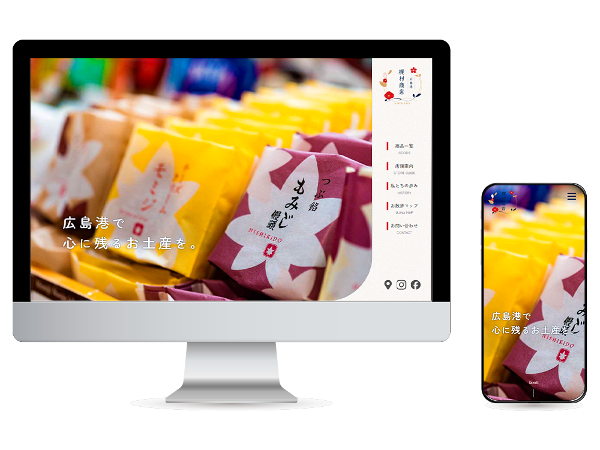
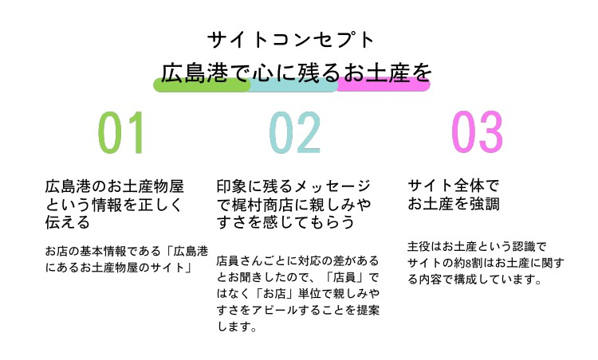

広島港 梶村商店
（卒業制作）
デザイン・写真・ライティング・コーディング（レスポンシブ対応）

- サイト概要
-
広島港の土産物屋 梶村商店
職業訓練校の卒業制作で作成した『広島港の土産物屋 梶村商店』のWEBサイトです。クライアントへのヒヤリング、写真撮影、デザイン、ライティング、コーディング、プレゼンまで一通り行いました。主にトップページのコーディング、写真撮影担当しました。
コンペ形式で当サイトが選ばれ、実際のサイトとして運用されています。
- ターゲット層
-
20-60代の幅広い年代の男女
全国から広島港へ訪れた観光客
広島県内から宇品地区へ買い物にきたお客様
- 目的・ゴール
- 広島港にある梶村商店の雰囲気や取扱商品を知ってもらい、新規の顧客開拓に繋げる。
宇品地区の観光スポットを知ってもらい、来店に繋げる。
- コンセプト
- 広島港で心に残るお土産を
プレゼン資料より
- 制作ポイント
-
親しみやすさや安心感を感じてもらえるよう、デザイン全体に丸みをもたせ、ベースカラーに加えて柔らかい印象の色を使用し、海をモチーフにしたあしらいやイラストで明るく優しい雰囲気に仕上げました。
トップページでは一目でサイト全体のコンテンツが把握できるよう、ファーストビューにメニューバーを配置しました。広い年代層が訪問者が迷わず使え、不便さを感じないユニバーサルデザインを意識したWEBサイトを設計しました。- #9B9595
- ベースカラー
- #14274C
- メインカラー
- #D93B2B
- アクセントカラー
- 制作過程
- 通っている職業訓練校の卒業課題として作成しました。チームメンバーは（ディレクター２人、デザイン２人、コーダー２人）で行いました。
- 制作期間
- デザイン2週間、コーディング1週間
- 使用ツール
- illustrator/ Photoshop/ HTML/CSS/ JavaScript